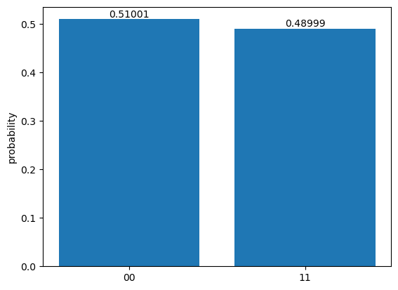

import pennylane as qml
---------------------------------------------------------------------------
ModuleNotFoundError Traceback (most recent call last)
Cell In[1], line 1
----> 1 import pennylane as qml
ModuleNotFoundError: No module named 'pennylane'
dev = qml.device("default.qubit", wires=2)
@qml.qnode(dev)
def circuit():
qml.Hadamard(wires=0) # apply a Hadamard gate on qubit 0
qml.CNOT(wires=[0, 1]) # apply CNOT from qubit 0 to 1
return qml.counts() # measure all qubits and return the counts
qml.drawer.use_style("black_white")
qml.draw_mpl(circuit)() # plot the circuit diagram
(<Figure size 500x300 with 1 Axes>, <Axes: >)
counts = circuit(shots=8192) # run circuit with 8192 shots
print(counts)
{'00': 4178, '11': 4014}
# convert from counts to probability estimates
probs = {}
for key, value in counts.items():
probs[key] = value/8192
print(probs)
{'00': 0.510009765625, '11': 0.489990234375}
from matplotlib import pyplot as plt
fig, ax = plt.subplots()
bars = ax.bar(probs.keys(), probs.values(), linewidth=1)
ax.bar_label(bars)
plt.ylabel("probability")
plt.savefig("BellState_simulator.pdf", format="pdf", bbox_inches="tight")
plt.show()
